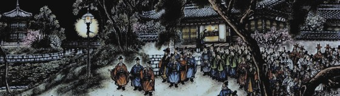
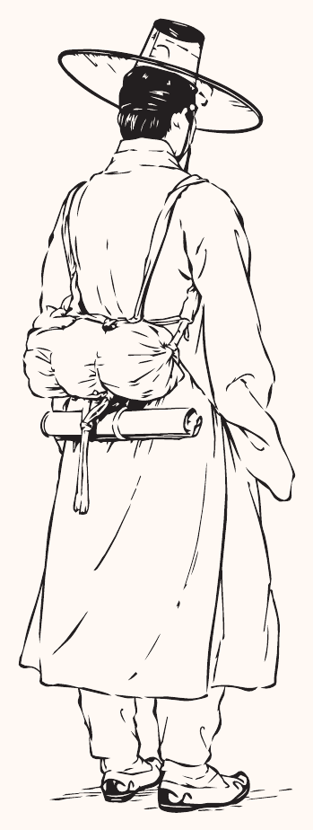
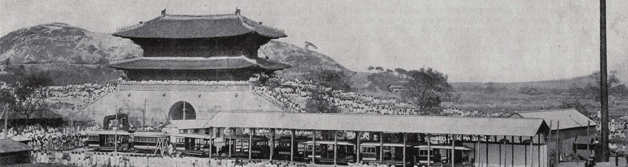
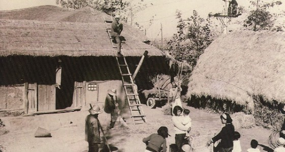

3줄 요약
- 1887년 경복궁 건청궁에 우리나라 최초의 전등이 켜졌고, 1900년 종로에 세 개의 전등이 켜지며 전깃불이 거리로 나왔다.
- 1899년 개통한 전차는 서울 사람들의 이동 방식과 시간 감각을 바꾸며 밤에도 움직이는 도시의 리듬을 만들었다.
- 1929년 6%에 그쳤던 전등 보급률은 1964년 제한 송전 해제와 발전 설비 확충을 거쳐 모두의 밤을 밝히게 됐다.
해가 지면 하루도 함께 저물던 시절, 밤을 밝히는 새로운 빛이 등장했다. 1887년 경복궁 건청궁에 처음 전등이 켜진 것이다. 궁궐에서 시작된 전기의 역사는 거리와 가정으로 조금씩 이어졌고, 서울 사람들의 밤과 하루를 바꾸어 놓았다.

궁궐에서 거리로, 밤을 밝힌 세 개의 불빛
1887년 3월 6일 저녁, 경복궁 건청궁에 우리나라 최초의 전등이 밝혀졌다. 전등 설비는 향원정 주변에 설치된 발전기를 통해 전력을 공급받았다. 당시 사람들에게 전깃불은 낯설고 신기한 풍경이었다. 발전기에서 전기를 만들어 불을 밝힌다는 사실 자체가 쉽게 상상하기 어려운 일이었기 때문이다. 전등이 깜빡이는 모습 때문에 ‘도깨비불’이라는 별칭도 생겼다.
하지만 궁궐에 들어온 전기가 곧바로 사람들의 일상으로 이어진 것은 아니었다. 전기가 거리로 나오기까지는 시간이 더 필요했다. 1898년 한성전기회사가 설립된 뒤 전차와 전등 사업이 본격적으로 추진되었고, 1900년 4월 10일에는 종로에 세 개의 전등이 처음 점등됐다. 궁궐 밖에서 일반 사람들이 전깃불을 볼 수 있게 된 순간이었다.
세 개의 불빛은 오늘날의 거리 조명과 비교하면 아주 작은 시작이었을 것이다. 그러나 밤거리에 인공적인 빛이 더해진다는 것은 단순히 어둠을 걷어내는 일만은 아니었다. 해가 진 뒤에도 거리를 바라보고, 사람과 사물을 구분하고, 밤의 공간을 새롭게 경험할 가능성이 열린 것이다.
전차가 바꾼 밤의 시간


전기가 바꾼 것은 거리의 밝기만이 아니었다. 전기를 동력으로 움직이는 전차는 서울 사람들의 이동 방식과 시간 감각에도 변화를 가져왔다. 한성전기는 전등보다 먼저 전차 사업에 착수했다. 1899년 5월 4일 전차 개통식이 열렸고, 같은 달 20일부터 일반 승객을 대상으로 영업을 시작했다. 서대문에서 종로를 거쳐 청량리로 이어지는 노선은 이후 청량리선과 용산선 등으로 확장됐다.
사람들은 이전보다 편리하게 도성 안팎을 오갈 수 있었고, 늦은 밤까지 전차를 이용할 수 있게 되면서 하루의 이동 범위도 달라졌다. 전차가 만든 변화는 단순히 목적지에 더 빨리 도착하는 데 그치지 않았다. 정해진 시간에 맞춰 이동하고, 도시의 서로 다른 공간을 연결하며, 밤에도 움직이는 도시의 리듬을 경험하게 된 것이다.
모두의 밤이 밝아지기까지

거리의 전등이 켜졌다고 해서 모든 가정에 곧바로 전기가 들어온 것은 아니었다. 1900년 종로에 가로등이 설치된 뒤 진고개에 거주하던 일본 상인들의 가정에도 전등이 들어왔지만, 전기 사용은 일부 지역과 계층에 집중됐다. 1929년에도 우리나라 가구의 전등 보급률은 6%에 그쳤다. 해방 이후에도 전력난과 전쟁으로 전기 공급은 순탄하지 않았다. 제한 송전이 해제된 것은 1964년 4월 1일. 이후 발전 설비가 확충되면서 전기는 점차 일상에 자리 잡았다. 1887년 궁궐에서 시작된 작은 불빛이 더 많은 사람의 밤을 밝히기까지는 오랜 시간이 필요했다.
전기가 들어온다는 것은 단지 어둠을 밝히는 일이 아니었다. 사람들이 머무는 시간과 이동하는 거리, 하루를 보내는 방식까지 바꾸는 일이었다. 궁궐의 밤을 밝힌 작은 불빛에서 시작된 변화는 이제 우리의 평범한 일상 곳곳에 스며들어 있다. 오늘날 우리가 당연하게 누리는 밝은 밤에 그 긴 변화의 시간이 담겨 있다.